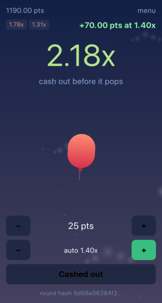

A crash game has very few moves, and almost all of the work is refusing them at the wrong moment. This chapter is about which moves are legal when.
enum State { Betting, // taking bets, the balloon is on the ground Running, // the multiplier is climbing Crashed, // it popped, losing bets are gone Settled // results are on screen, waiting to open the next round }; Q_ENUM(State)
Betting takes stakes and nothing else. Running climbs and accepts exactly one cash out. Crashed is the moment the balloon pops, and Settled is the few seconds of results before the next round opens.
Every public method on the engine starts by checking the state, and returns false rather than throwing or asserting. The caller is a user interface, and a refused tap is a normal thing for a user interface to do.
The engine is also told where the round pops instead of deciding it - the commitment from the previous chapter was published before any of this ran, and an engine that could pick its own crash point would quietly undo that.
A bet is only accepted while betting is open and only once per round. The second condition matters more than it looks: without it a player could add to their stake at 3x, which is not betting, it is buying a result.
The stake leaves the wallet immediately. Points that are in play are gone until a cash out puts them back, so there is no way to bet the same points twice by acting quickly.
bool RoundEngine::cashOut() { // Only once, only while the balloon is still up, and only with money in. if (m_state != Running || m_hasCashedOut || m_bet <= 0.0) return false; setHasCashedOut(true); const qreal payout = m_wallet->payOut(m_bet, m_multiplier); emit cashedOut(payout, m_multiplier); return true; }
Three refusals in one condition, and each is a bug somebody has shipped: not while Running means no cashing out after the pop, m_hasCashedOut means no collecting twice on one stake, and the bet check means no payout for having watched a round.

The payout uses m_multiplier - the value the player can read - and not the curve behind it. The difference is fractions of a percent per round, and it is the difference between a game that pays what it displays and one that argues about rounding.
That value is set in exactly one place:
bool RoundEngine::advanceTo(qint64 elapsedMs) { if (m_state != Running) return false; // Truncating happens here and nowhere else. The player is paid at the number // they can read on screen, so that number - not the raw curve behind it - is // what the round is settled with. const qreal raw = m_curve->multiplierAt(elapsedMs); const qreal shown = qFloor(raw * 100.0) / 100.0; // The target is settled before the crash even when one tick covers both. // Whatever the clock did, a target below the crash point was reached first in // the round, and a dropped frame must not turn a win into a loss. takeTheMoneyAtTheTarget(shown); if (shown >= m_crashPoint) { // Never overshoot into a multiplier that was never reachable this round. setMultiplier(m_crashPoint); setState(Crashed); emit crashed(m_crashPoint); return true; } setMultiplier(shown); return true; }
The engine has no clock. Something outside advances it, which is why a test can run a full round in microseconds while the game runs the same code off a 16 ms timer. Truncation to two decimals happens here and nowhere else, and on the crash the multiplier is pinned to the committed point rather than to whatever the curve had reached by the time the timer last fired.
With a free license Felgo shows a splash screen for the first few seconds. The game behind it is already running, which for a game with a permanent round cycle means the first round starts while the player is still looking at a logo. They arrive to a round they never had a chance to bet on.
// Not Component.onCompleted: on a free license the splash screen sits on top // for a few seconds, and rounds cycling behind it would mean the player walks // in on a bet they never had the chance to place. onSplashScreenFinished: Rounds.start()
One signal instead of Component.onCompleted. Worth knowing before you build anything that starts moving on its own.
The line is drawn at "what is true" versus "what it looks like".
C++ owns the seed, the crash point, the state machine, the balance, and the clock. QML owns the balloon, the colours, the countdown text, and which button is offered. When the interface wants something to happen it asks: Rounds.requestBet() and Rounds.requestCashOut() return nothing, and the answer arrives as a signal.
That indirection looks like ceremony in a single-player game where the answer is instant. It is there because the same screen has to work when the answer comes from a server instead - which is the subject of the last chapter.